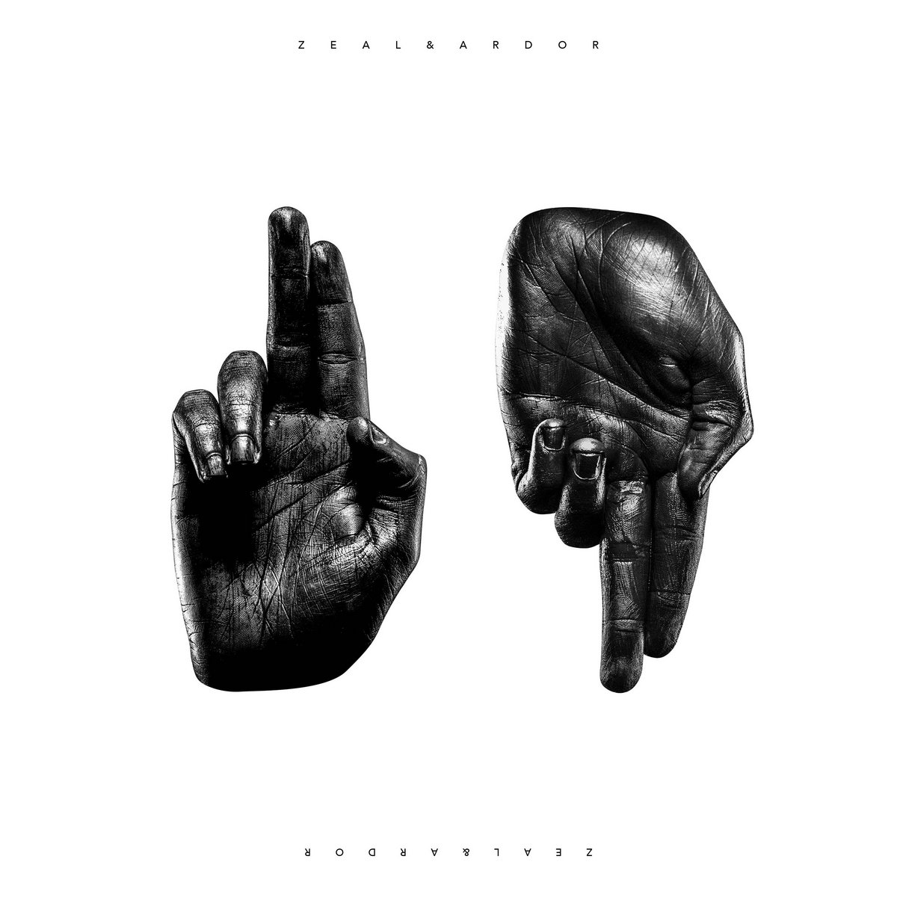
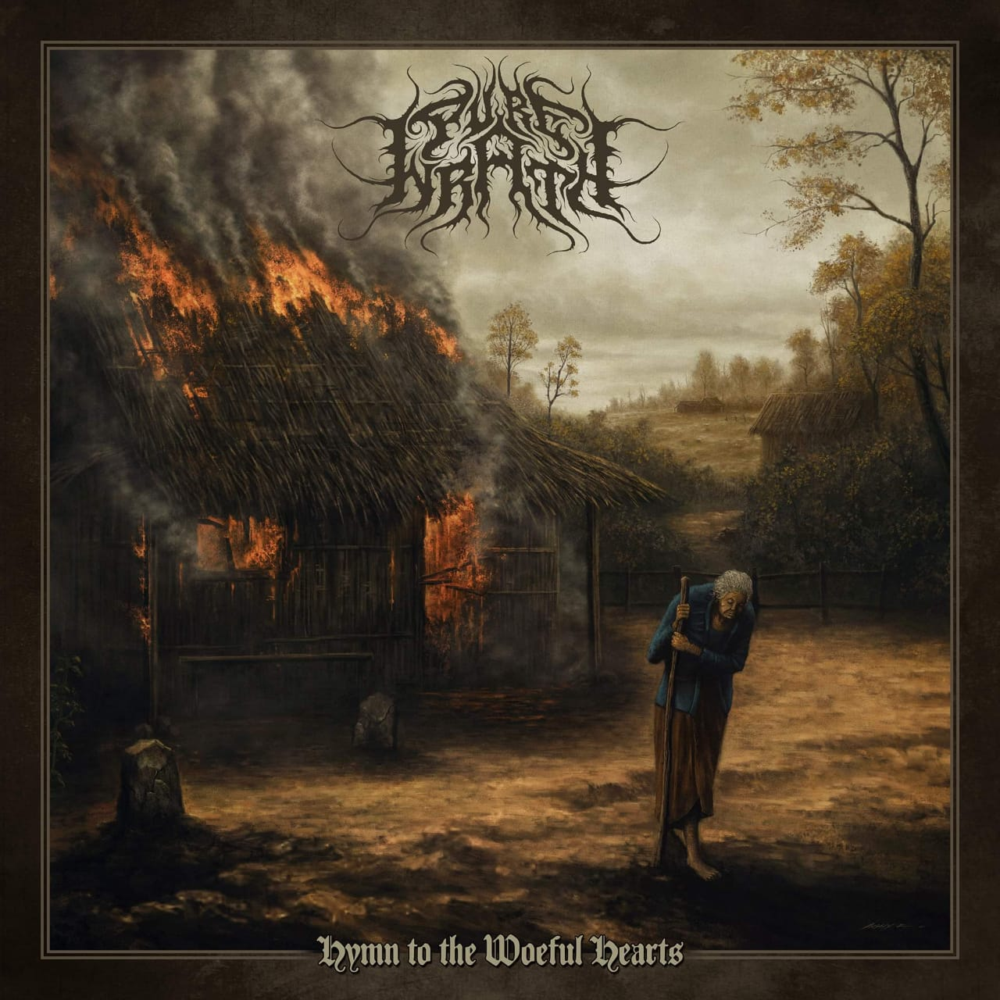
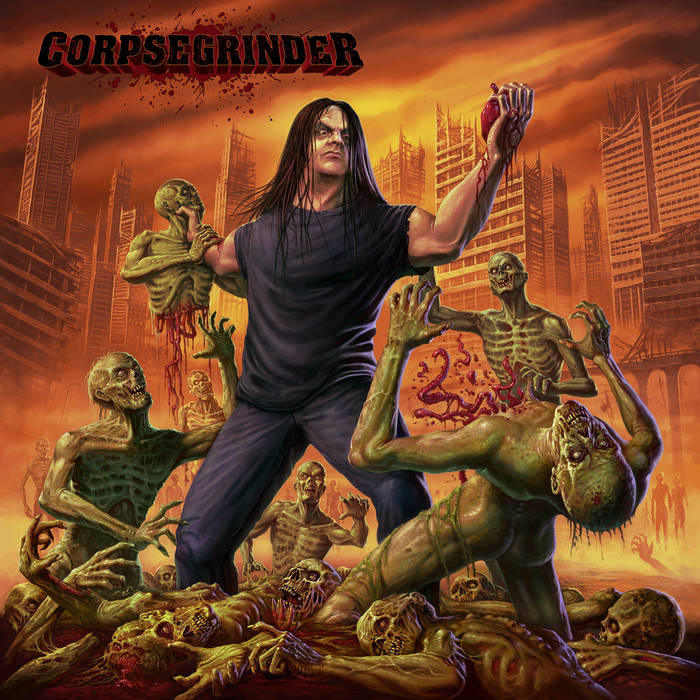
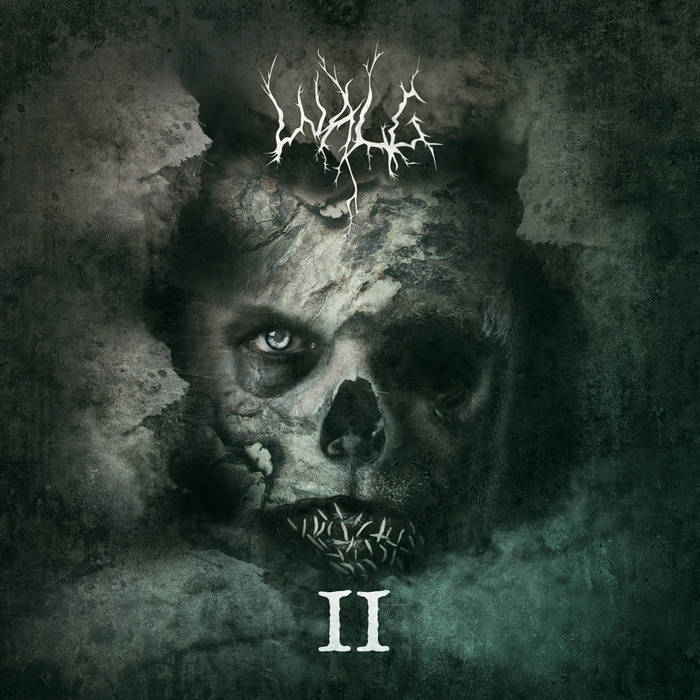
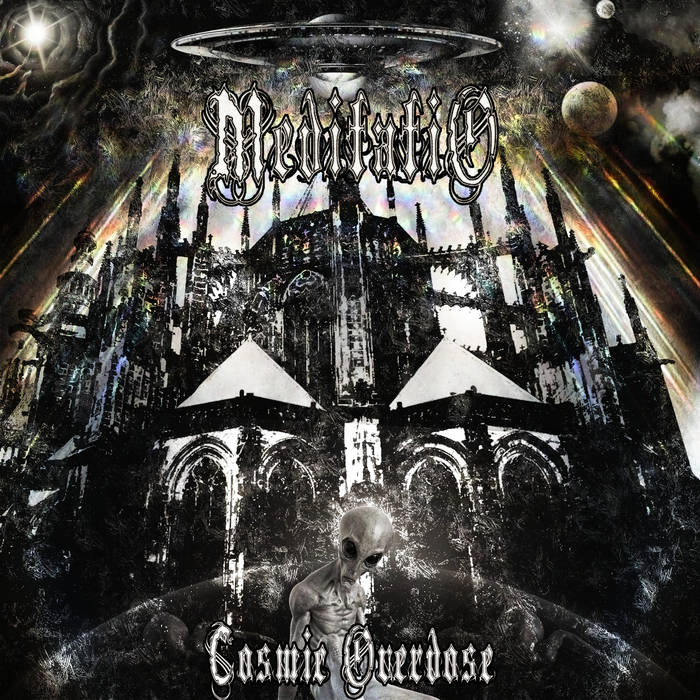

Feb 27-Mar 5
Zeal & Ardor -- Zeal & Ardor | Avant-Garde Metal | Feb 11th 2022 |
Phasellus in lacus molestie, feugiat nibh rhoncus, gravida eros. Nam elit lorem, maximus sit amet diam ac, suscipit euismod libero.
Quisque sollicitudin, mi nec tristique tempor, enim elit aliquam ante, et hendrerit ex dolor eget leo. Quisque blandit laoreet ex, eu malesuada velit sollicitudin vitae. Fusce sed iaculis lorem, a vulputate est. Cras mollis ullamcorper
cursus. Donec ornare est quis ipsum congue, sed volutpat sem elementum. Quisque pellentesque, ante nec iaculis condimentum, mi mi vestibulum nunc, vel accumsan augue elit ut mi. Nam et nisl purus.
Pure Wrath -- Hymn to the Woeful Hearts | Atmospheric Black Metal | Feb 18th 2022 |
Pellentesque habitant morbi tristique senectus et netus et malesuada fames ac turpis egestas. Duis tincidunt, lorem scelerisque
placerat auctor, felis elit laoreet velit, in mattis ligula neque non nibh. Vestibulum sodales erat eget lacinia volutpat. Vestibulum at nunc metus. Vestibulum ante ipsum primis in faucibus orci luctus et ultrices posuere cubilia curae;
Nullam mattis velit nibh, in egestas felis ullamcorper nec. Curabitur a augue in libero scelerisque pellentesque sit amet quis quam. Donec quis congue quam. Vivamus sit amet scelerisque leo.
Corpsegrinder -- Corpsegrinder | Death Metal | Feb 25th 2022 |
Aenean ac dolor neque. Sed posuere, leo eget laoreet interdum, sapien nulla elementum dui, dictum varius risus justo at felis. Quisque
vitae tempus libero, vel ornare enim. Mauris ut imperdiet lectus. Proin euismod tincidunt justo. Mauris ut orci sed nulla ultricies lacinia et ac lectus. Morbi tempor ante urna. Aliquam hendrerit, ipsum id sodales egestas, quam lacus egestas
ipsum, vel hendrerit dolor elit ac mauris. Quisque porttitor cursus tellus, ac bibendum est malesuada eu. Nam ullamcorper, tortor quis aliquam consequat, diam dolor finibus neque, eget pulvinar quam ligula in leo. Aliquam eu massa sagittis,
hendrerit massa vitae, suscipit felis. Nulla blandit tellus eget turpis rhoncus, eu lacinia arcu mattis. Vivamus tempus tempus rutrum. Etiam sed turpis lorem.
Walg -- II | Melodic Black Metal | Feb 22nd 2022 |
Sed finibus mi turpis, nec condimentum sem vestibulum non. Maecenas at ante iaculis, gravida sapien ultrices, aliquam mi. Aliquam erat volutpat. In
et hendrerit ante. Vivamus a ultrices sapien. Etiam sed lectus sagittis, porttitor tellus et, rutrum mauris. Vivamus ligula elit, egestas in tellus in, consequat ornare nibh. Vestibulum vitae sem vel enim feugiat convallis sed at orci.
Donec id rutrum tortor. Ut ut lacinia lectus. Praesent sit amet congue ante. Nullam vel elit vitae nibh tempus dictum eget sed nunc. Aliquam elementum metus odio, a tristique massa vestibulum non. Donec vitae facilisis diam, ut vulputate
orci. Morbi nec quam lectus. Proin porttitor turpis vulputate gravida iaculis.
Meditatio -- Cosmic Overdose | Symphonic Black Metal | Mar 3rd 2022 |
Quisque consectetur lacinia est ut varius. Ut commodo vitae mi non fringilla. Etiam in volutpat neque. Ut molestie felis at diam pharetra
ornare. Nulla sit amet euismod lorem. Maecenas non eros vitae nibh pretium dapibus. Nullam finibus, erat vitae venenatis volutpat, ex enim ultricies turpis, eget molestie tortor orci a magna. Mauris vulputate faucibus fermentum. Donec
sit amet urna lacinia, imperdiet ligula sit amet, rutrum odio. Nulla mattis nunc tempor, commodo turpis ac, porttitor libero. Fusce molestie mi vitae nulla finibus scelerisque. Nam quis nunc arcu. Proin id leo purus. Phasellus vestibulum
sapien ipsum, non convallis nisi vestibulum sed.